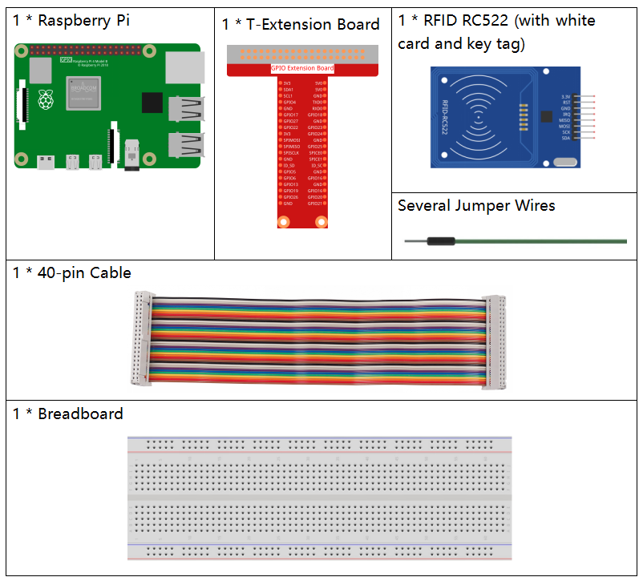

Nota
¡Hola, bienvenido a la Comunidad de Entusiastas de SunFounder Raspberry Pi, Arduino y ESP32 en Facebook! Profundiza en Raspberry Pi, Arduino y ESP32 con otros entusiastas.
¿Por qué unirse?
Soporte experto: Resuelve problemas postventa y desafíos técnicos con la ayuda de nuestra comunidad y equipo.
Aprende y comparte: Intercambia consejos y tutoriales para mejorar tus habilidades.
Previews exclusivos: Accede anticipadamente a anuncios de nuevos productos y adelantos exclusivos.
Descuentos especiales: Disfruta de descuentos exclusivos en nuestros productos más recientes.
Promociones y sorteos festivos: Participa en sorteos y promociones de temporada.
üëâ ¬øListo para explorar y crear con nosotros? Haz clic en [Aqu√≠] y únete hoy mismo.
2.2.7 Módulo RFID MFRC522
Introducción
La Identificación por Radiofrecuencia (RFID) se refiere a tecnologías que utilizan comunicación inalámbrica entre un objeto (o etiqueta) y un dispositivo interrogador (o lector) para rastrear e identificar automáticamente dichos objetos.
Algunas de las aplicaciones más comunes de esta tecnología incluyen cadenas de suministro al por menor, cadenas de suministro militares, métodos de pago automatizados, seguimiento y gestión de equipaje, seguimiento de documentos y gestión farmacéutica, por nombrar algunas.
En este proyecto, utilizaremos RFID para lectura y escritura.
Componentes necesarios
En este proyecto, necesitamos los siguientes componentes.
Diagrama esquemático

Procedimientos experimentales
Paso 1: Construye el circuito.

Paso 2: Active el SPI antes de comenzar el experimento; consulte SPI Configurtion para más detalles.
Paso 3: Ve a la carpeta del código.
cd ~/davinci-kit-for-raspberry-pi/python-pi5
Paso 4: Después de ejecutar 2.2.10_write.py. Necesitas escribir un mensaje primero, presiona Enter para confirmar, luego coloca la tarjeta en el módulo MFRC522, espera a que aparezca «La escritura de datos está completa» y retira la tarjeta, o reescribe el mensaje en otra tarjeta y sal con Ctrl+C.
sudo python3 2.2.10_write.py
Paso 5: Después de ejecutar el programa, introduce el texto que deseas escribir (hasta 16 caracteres), como «welcome», y presiona Enter para confirmar. Luego, aparecerá el mensaje «Los datos se han escrito en la tarjeta». Finalmente, presiona Ctrl+C para detener la ejecución del código.
Por favor, coloca tu tarjeta RFID en el lector...
Presiona Ctrl-C para detener.
¡Tarjeta RFID detectada!
UID de la tarjeta: 9BF6210B
Por favor, introduce los datos a escribir en la tarjeta (hasta 16 caracteres): welcome
Autenticación del bloque 8 exitosa
4 backdata &0x0F == 0x0A 10
Datos escritos
Los datos se han escrito en la tarjeta
Leyendo datos del bloque 8:
Sector 8 [119, 101, 108, 99, 111, 109, 101, 0, 0, 0, 0, 0, 0, 0, 0, 0]
Paso 6: Ahora ejecuta 2.2.10_read.py para leer la información de la etiqueta o tarjeta que has escrito.
sudo python3 2.2.10_read.py
Paso 7: Después de ejecutar, obtendrás la siguiente información.
Por favor, coloca tu tarjeta RFID en el lector...
Presiona Ctrl-C para detener.
¡Tarjeta RFID detectada!
UID de la tarjeta: 9BF6210B
Autenticación del bloque 8 exitosa
Sector 8 [119, 101, 108, 99, 111, 109, 101, 0, 0, 0, 0, 0, 0, 0, 0, 0]
MFRC522_Read tipo de retorno: <class 'int'>, Datos: [119, 101, 108, 99, 111, 109, 101, 0, 0, 0, 0, 0, 0, 0, 0, 0]
Sector 8 [119, 101, 108, 99, 111, 109, 101, 0, 0, 0, 0, 0, 0, 0, 0, 0]
Datos leídos: welcome
Análisis de Código para 2.2.10_write.py
Este script de Python escribe datos proporcionados por el usuario en una tarjeta RFID usando el lector RFID MFRC522. El script revisa continuamente si hay una tarjeta, pide al usuario que introduzca los datos para escribir y confirma las operaciones de escritura y lectura exitosas.
Importaciones
MFRC522: Importa funciones y clases necesarias para las operaciones del lector RFID.signalytime:signalse usa para manejar la terminación controlada con SIGINT (Ctrl+C), ytimese usa para agregar pausas en el bucle principal.
Variable Global
continue_reading: Controla el bucle principal, permitiendo que el script se termine correctamente cuando se establece enFalse.
continue_reading = True
Manejo de Señales:
Función
end_read: Esta función se activa cuando se detectaCtrl+C(SIGINT). Establececontinue_readingenFalse, permitiendo que el script salga correctamente.signal.signal(signal.SIGINT, end_read): Asocia la señal SIGINT (Ctrl+C) conend_read, por lo que, cuando se interrumpe, el script mostrará un mensaje y se cerrará de manera controlada.
signal.signal(signal.SIGINT, end_read)
Configuración del Lector RFID:
rfid_reader: Una instancia de la claseMFRC522, usada para controlar las operaciones del lector RFID.default_key: Una lista de 6 bytes, típicamente0xFFpara cada byte. Esta es la clave de autenticación predeterminada para la mayoría de las tarjetas RFID.
# Crear una instancia de la clase MFRC522 rfid_reader = MFRC522.MFRC522() # Definir la clave predeterminada (6 bytes, por defecto todos son 0xFF) default_key = [0xFF, 0xFF, 0xFF, 0xFF, 0xFF, 0xFF]
Instrucciones para el Usuario
El script imprime instrucciones en la consola, informando al usuario que coloque su tarjeta RFID en el lector y que use
Ctrl+Cpara salir.print("Por favor, coloca tu tarjeta RFID en el lector...") print("Presiona Ctrl-C para detener.")
Bucle Principal: Detección, Escritura y Lectura de Datos
Detección de la Tarjeta: El script llama continuamente a
MFRC522_Requestpara detectar tarjetas RFID. Si se detecta una tarjeta (status == rfid_reader.MI_OK), procede al siguiente paso.
(status, TagType) = rfid_reader.MFRC522_Request(rfid_reader.PICC_REQIDL) # Si se detecta una tarjeta if status == rfid_reader.MI_OK: print("¡Tarjeta RFID detectada!") ... else: # Espera un momento antes de intentarlo de nuevo time.sleep(0.5)
Recuperación del UID de la Tarjeta: Llama a
MFRC522_SelectTagSNpara obtener el identificador único (UID) de la tarjeta. Si tiene éxito, el UID se convierte en una cadena hexadecimal y se imprime. El UID es necesario para la autenticación.
(status, uid) = rfid_reader.MFRC522_SelectTagSN() # Si tenemos el UID, continuamos if status == rfid_reader.MI_OK: # Imprimir UID uid_str = ''.join(['%02X' % i for i in uid]) print("UID de la tarjeta: %s" % uid_str) ... else: print("No se puede obtener el UID de la tarjeta")
Preparación de los Datos:
Solicitar Entrada: Se le solicita al usuario que introduzca los datos para escribir en la tarjeta (hasta 16 caracteres).
Truncamiento de Datos: Los datos se limitan a 16 caracteres si el usuario introduce más.
Conversión de Cadena a Bytes: La entrada del usuario en forma de cadena se convierte en una lista de bytes y se rellena hasta 16 bytes, como requiere el formato de almacenamiento de la tarjeta RFID.
write_data = input("Por favor, introduce los datos para escribir en la tarjeta (hasta 16 caracteres): ") # Asegurarse de que los datos no superen los 16 caracteres write_data = write_data[:16] # Convertir cadena a lista de bytes, rellenar hasta 16 bytes data_to_write = [0x00]*16 string_bytes = write_data.encode('utf-8') for i in range(len(string_bytes)): data_to_write[i] = string_bytes[i]
Especificación del Número de Bloque: El script especifica el bloque 8 para escribir los datos. Nota: Los números de bloque deben evitar los bloques de trailer de sector, típicamente el último bloque de cada sector, ya que se usan para información de control.
block_num = 8 # Por ejemplo, elige el bloque 8
Autenticación de la Tarjeta:
MFRC522_Authautentica el bloque especificado usando la clave predeterminada y el UID. Si la autenticación es exitosa, el script procede a escribir los datos. Si falla, se imprime un mensaje de error y se detiene la encriptación.
status = rfid_reader.MFRC522_Auth(rfid_reader.PICC_AUTHENT1A, block_num, default_key, uid) if status == rfid_reader.MI_OK: print("Autenticación del bloque %d exitosa" % block_num) ... else: print("Autenticación fallida") rfid_reader.MFRC522_StopCrypto1()
Escritura de Datos en la Tarjeta:
MFRC522_Writeescribe los datos preparados en el bloque especificado de la tarjeta RFID. Después de escribir, un mensaje confirma que los datos se han escrito correctamente en la tarjeta.
rfid_reader.MFRC522_Write(block_num, data_to_write) print("Los datos se han escrito en la tarjeta")
Lectura de los Datos: Para verificar la operación de escritura, el script lee los datos del mismo bloque usando
MFRC522_Read. Los datos recuperados se imprimen para que el usuario pueda verificar los datos.
print("Leyendo datos del bloque %d:" % block_num) rfid_reader.MFRC522_Read(block_num)
Detener Encriptación:
MFRC522_StopCrypto1detiene el proceso de encriptación después de completar las operaciones. Este paso es necesario para restablecer el estado de comunicación de la tarjeta.
# Detener encriptación rfid_reader.MFRC522_StopCrypto1()
Salir del Bucle: Después de escribir y verificar los datos,
continue_readingse establece enFalsepara salir del bucle y terminar el script.continue_reading = False
Puntos Clave
Terminación Controlada: El script captura SIGINT (Ctrl+C) para terminar de manera segura e imprime un mensaje, permitiendo que cualquier operación en curso se complete antes de salir.
Interacción con el Usuario: Solicita la entrada del usuario, permitiendo que los datos se personalicen cada vez que se escribe en la tarjeta.
Autenticación: Garantiza que el acceso al bloque especificado se gestione de manera segura, manejando los fallos de autenticación de forma controlada.
Formateo de Datos: Convierte los datos de cadena a un formato de lista de bytes compatible con la estructura de almacenamiento de la tarjeta, rellenando según sea necesario.
Verificación: Lee los datos de la tarjeta para confirmar una escritura exitosa, mejorando la confiabilidad.
Modularidad: El script está bien organizado con una funcionalidad clara para detectar, escribir y leer, lo que facilita el seguimiento y mantenimiento.
Este script es adecuado para aplicaciones que requieren capacidades de lectura y escritura con tarjetas RFID, como el control de acceso o la identificación de usuarios.
Explicación del Código para 2.2.10_read.py
Este script de Python utiliza un lector RFID (MFRC522) para leer datos de tarjetas RFID. El script está estructurado para revisar continuamente si hay tarjetas, recuperar sus datos y gestionar las solicitudes de salida de manera controlada mediante el manejo de señales.
Importaciones:
MFRC522: Este módulo proporciona métodos para interactuar con el lector RFID MFRC522.signalytime: Se utilizan para manejar la terminación del script (por ejemplo,Ctrl+C) y controlar el tiempo de ciertas operaciones.
Variables Globales:
continue_reading: Un indicador booleano que controla el bucle principal de lectura, permitiendo que el script se detenga de forma controlada cuando se presionaCtrl+C.
continue_reading = True
Manejo de Señales:
Función
end_read: Esta función se activa cuando se detectaCtrl+C(SIGINT). Establececontinue_readingenFalse, permitiendo que el script salga de manera controlada.signal.signal(signal.SIGINT, end_read): Asocia la señal SIGINT (Ctrl+C) conend_read, por lo que, al interrumpir, el script mostrará un mensaje y se cerrará de manera controlada.
signal.signal(signal.SIGINT, end_read)
Configuración del Lector RFID:
rfid_reader: Una instancia de la claseMFRC522, usada para controlar las operaciones del lector RFID.default_key: Una lista de 6 bytes, típicamente0xFFpara cada byte. Esta es la clave de autenticación predeterminada para la mayoría de las tarjetas RFID.block_num: Especifica el número de bloque que se leerá de la tarjeta RFID, aquí establecido en el bloque8. El número de bloque debe coincidir con el utilizado cuando se escribieron datos en la tarjeta.
# Crear una instancia de la clase MFRC522 rfid_reader = MFRC522.MFRC522() # Definir la clave predeterminada (6 bytes, por defecto todos son 0xFF) default_key = [0xFF, 0xFF, 0xFF, 0xFF, 0xFF, 0xFF] # Definir el número de bloque a leer (debe coincidir con el bloque usado al escribir) block_num = 8 # Por ejemplo, el bloque 8
Instrucciones para el Usuario
El script imprime instrucciones en la consola, informando al usuario que coloque su tarjeta RFID en el lector y que use
Ctrl+Cpara salir.print("Por favor, coloca tu tarjeta RFID en el lector...") print("Presiona Ctrl-C para detener.")
Bucle Principal: Detección de Tarjetas RFID y Lectura de Datos.
Escaneo de Tarjetas: El bucle principal llama continuamente a
MFRC522_Requestpara escanear tarjetas RFID. Si se detecta una tarjeta, procede a los siguientes pasos.(status, TagType) = rfid_reader.MFRC522_Request(rfid_reader.PICC_REQIDL) if status == rfid_reader.MI_OK: print("¡Tarjeta RFID detectada!") ... else: # Si no se detecta ninguna tarjeta, espera un breve período antes de volver a intentar time.sleep(0.5)
Recuperación del UID de la Tarjeta: Utiliza
MFRC522_SelectTagSNpara obtener el identificador único (UID) de la tarjeta. Si tiene éxito, convierte el UID en una cadena hexadecimal y lo imprime. Este UID es necesario para autenticar la tarjeta.(status, uid) = rfid_reader.MFRC522_SelectTagSN() # Si el UID se recuperó correctamente, continuar if status == rfid_reader.MI_OK: # Convertir la lista UID a una cadena hexadecimal uid_str = ''.join(['%02X' % i for i in uid]) print("UID de la tarjeta: %s" % uid_str) ... else: print("No se puede obtener el UID de la tarjeta")
Autenticación de la Tarjeta:
MFRC522_Authautentica el acceso al bloque especificado usando la clave predeterminada y el UID de la tarjeta. Si la autenticación tiene éxito, el script pasa a leer datos del bloque.status = rfid_reader.MFRC522_Auth(rfid_reader.PICC_AUTHENT1A, block_num, default_key, uid) if status == rfid_reader.MI_OK: print("Autenticación del bloque %d exitosa" % block_num) ... else: print("Autenticación fallida, código de estado: %s" % status) rfid_reader.MFRC522_StopCrypto1()
Lectura de Datos:
MFRC522_Readlee datos del bloque especificado.data: Esta variable contiene los datos en bruto del bloque si la operación de lectura es exitosa.El script convierte cada byte en
dataa caracteres y elimina cualquier byte nulo de relleno (\x00). Los datos procesados se imprimen.
read_status, data = rfid_reader.MFRC522_Read(block_num) print(f"MFRC522_Read tipo de retorno: {type(read_status)}, Datos: {data}") if read_status == rfid_reader.MI_OK and data: print(f"Sector {block_num} {data}") # Convertir los datos en bytes a cadena y eliminar los bytes nulos de relleno read_data = ''.join([chr(byte) for byte in data]).rstrip('\x00') print("Datos leídos: %s" % read_data) else: print("Lectura de datos fallida, código de estado: %s" % read_status)
MFRC522_StopCrypto1se llama para detener la encriptación y restablecer la comunicación de la tarjeta.# Detener la encriptación en la tarjeta rfid_reader.MFRC522_StopCrypto1()
Espera entre Lecturas: Si no se detecta ninguna tarjeta, el bucle se pausa durante 0.5 segundos antes de volver a intentar.
else: # Si no se detecta ninguna tarjeta, espera un breve período antes de volver a intentar time.sleep(0.5)
Puntos Clave
Salida Controlada: El script captura la señal
SIGINTpara una terminación controlada, permitiendo que el lector RFID complete cualquier operación en curso.Gestión de Bloques y UID: Utiliza el bloque y el UID como componentes clave en la lectura de datos de una tarjeta RFID, con un manejo adecuado de la autenticación y los errores de lectura.
Diseño Modular: El uso de funciones dedicadas del módulo
MFRC522hace que el script sea legible y modular, simplificando las operaciones de RFID como la autenticación y la lectura de datos.
Imagen del fenómeno